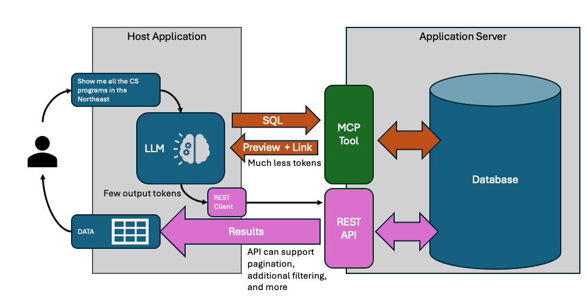

Building a Dual Response MCP Server
Part 3 of "Scaling LLM-Based Reporting Past the Demo"
December 6th, 2025
TLDR
A complete Node.js implementation of dual response: an MCP server returning samples plus resource links, a shared resource store mapping GUIDs to query definitions, REST endpoints serving paginated results, and client-side detection that extracts resource URLs from tool outputs. Working code demonstrates the pattern end-to-end.
In Part 1, we established why LLMs choke on large result sets. In Part 2, we specified the dual response pattern - samples for the LLM, resource links for full retrieval. Now let's build it.
This post walks through an implementation using Node.js, Express, and SQLite. We'll build both sides: an MCP server that returns dual responses, and a client that detects them and fetches full results. All code is available at github.com/freezer333/mcp-rlp.
A note on portability: The example uses OpenAI's Agent SDK for the client, but the server-side pattern works with any MCP client. Client-side detection will need adaptation for different SDKs since each structures tool outputs differently.
Architecture Overview
The dual response pattern needs two communication channels:

MCP handles the LLM conversation - tool discovery, query generation, sample validation. The LLM sees 10-15 rows, enough to catch mistakes.
REST handles bulk data transfer. Your application fetches complete results directly, with pagination. The LLM never touches these rows.
On the server, three components work together:
- MCP endpoint (
POST /mcp) - Handles tool calls, returns samples + resource links - Resource store - Maps GUIDs to query definitions
- REST endpoint (
GET /resources/:guid) - Fetches paginated results by GUID
On the client:
- Agent runs the conversation, calls MCP tools
- After each turn, check tool outputs for
resource.url - When found, fetch full results via HTTP
The resource store is the bridge. MCP creates resources; REST consumes them.
The Resource Store
When the query tool executes, it needs somewhere to stash the query so the REST endpoint can find it later. That's the resource store - a map from GUID to query definition.
Here's the core of it (full source):
class ResourceStore {
#resources = new Map();
create(queryDefinition) {
const guid = crypto.randomUUID();
this.#resources.set(guid, {
id: guid,
sql: queryDefinition.sql,
totalCount: queryDefinition.totalCount,
createdAt: new Date().toISOString()
});
return guid;
}
get(guid) {
return this.#resources.get(guid) || null;
}
delete(guid) {
return this.#resources.delete(guid);
}
}We store the SQL query, not the results. Three reasons:
- Memory - Results could be millions of rows. The query is a few KB.
- Freshness - Re-executing on fetch means results reflect current data.
- Pagination - We can wrap any stored query with
LIMIT/OFFSET.
In production, this in-memory map becomes a database. You might add query rewriting (injecting tenant filters), security validation, or result caching for expensive queries. The client doesn't know or care - it just hits the REST endpoint with a GUID.
The Query Tool
This is the heart of dual response. The tool executes two queries:
SELECT COUNT(*) FROM (user_query)- How many total rows?SELECT * FROM (user_query) LIMIT 10- What do they look like?
Then it stores the base query (without LIMIT) and returns both the sample and a resource link.
Here's the handler (full source):
handler: async (args) => {
const { sql } = args;
// Step 1: Get total count
const countSql = `SELECT COUNT(*) as count FROM (${sql})`;
const totalCount = database.prepare(countSql).get().count;
// Step 2: Get sample rows
const sampleSql = `${sql} LIMIT ${SAMPLE_SIZE}`;
const sampleRows = database.prepare(sampleSql).all();
// Step 3: Store for REST retrieval
const guid = resourceStore.create({ sql, totalCount });
// Step 4: Return dual response
return {
results: sampleRows,
resource: {
uri: `resource://${guid}`,
url: `${baseUrl}/resources/${guid}`,
name: 'Query Results',
mimeType: 'application/json'
},
metadata: {
total_count: totalCount,
sample_count: sampleRows.length,
executed_at: new Date().toISOString()
}
};
}The response gives the LLM what it needs to validate: sample rows and total count. The resource.url is for the client application - it's the REST endpoint where full results live.
Note what we're not returning: column type definitions. The LLM can infer types from the sample data. Skipping them saves tokens.
The REST Layer
The REST endpoint takes a GUID and returns paginated data. It looks up the stored query, wraps it with pagination, and executes.
router.get('/:guid', (req, res) => {
const { guid } = req.params;
const skip = parseInt(req.query.skip) || 0;
const limit = req.query.limit ? parseInt(req.query.limit) : null;
const resource = resourceStore.get(guid);
if (!resource) {
return res.status(404).json({ error: 'Resource not found' });
}
// Wrap stored query with pagination
let paginatedSql = resource.sql;
if (limit !== null) {
paginatedSql = `SELECT * FROM (${resource.sql}) LIMIT ${limit} OFFSET ${skip}`;
}
const rows = database.prepare(paginatedSql).all();
const hasNext = limit && (skip + rows.length) < resource.totalCount;
res.json({
data: rows,
total_count: resource.totalCount,
returned_count: rows.length,
skip,
has_next: hasNext,
has_prev: skip > 0
});
});The pagination pattern - SELECT * FROM (original) LIMIT ? OFFSET ? - works regardless of what the original query contained. Joins, aggregations, subqueries - they all become a derived table that we paginate over.
Each page request re-executes the query. No caching, no stale data, no complexity. For most reporting use cases, query execution is fast enough that this is fine. If you need caching, add it in the resource store.
Wiring It Together
The server entry point creates the resource store and shares it between MCP and REST:
// Create shared resource store
const resourceStore = new ResourceStore();
// Context provider injects dependencies into tools
const contextProvider = async (req) => ({
resourceStore,
baseUrl: `http://localhost:${PORT}`
});
// MCP endpoint
app.post('/mcp', mcpServer.streamingEndpoint(contextProvider));
// REST endpoint
app.use('/resources', createResourceRouter(resourceStore));The contextProvider is called on each MCP request. It returns an object that gets passed to tool handlers - that's how queryDualResponse accesses the resource store.
Both endpoints share the same store instance. When MCP creates a resource, REST can immediately serve it.
Client-Side Detection
After the agent finishes a conversation turn, you need to check if any tool returned a dual response. The detection is simple: look for resource.url in the tool output.
The complication is getting to the tool output. Every LLM SDK structures responses differently. OpenAI's Agent SDK wraps outputs in nested JSON. Anthropic's doesn't. LangChain has its own format.
The pattern I use: abstract the extraction into a helper function that you adapt per SDK.
// SDK-specific: extract tool outputs from agent result
const toolOutputs = extractToolOutputs(result);
// Universal: check for dual response
for (const { output } of toolOutputs) {
if (output?.resource?.url) {
// Found a dual response
dualResponses.push({
resourceUrl: output.resource.url,
totalCount: output.metadata.total_count,
sample: output.results
});
}
}The extractToolOutputs helper handles the SDK-specific unwrapping. For OpenAI's Agent SDK, that means parsing through nested JSON structures in result.state._generatedItems. For other SDKs, you'll write different extraction logic.
The dual response detection itself is universal: does the output have resource.url? That's it.
Pagination
Once you have a dual response, fetching pages is straightforward HTTP:
async function fetchPage(resourceUrl, skip, limit) {
const url = new URL(resourceUrl);
url.searchParams.set('skip', skip);
url.searchParams.set('limit', limit);
const response = await fetch(url);
return response.json();
}The client tracks pagination state - which resource is active, what page we're on:
let currentResource = null;
let currentPage = 0;
const PAGE_SIZE = 25;
async function nextPage() {
if (!currentResource) return;
const skip = (currentPage + 1) * PAGE_SIZE;
const result = await fetchPage(currentResource.url, skip, PAGE_SIZE);
if (result.data.length > 0) {
currentPage++;
displayResults(result);
}
}Each navigation triggers a fresh HTTP request. The server re-executes the stored query with new pagination parameters. No client-side caching of full result sets.
The demo uses a terminal UI with blessed for rendering, but the fetching logic works with any framework. React, Vue, vanilla JS - it's just HTTP.
What's Not Covered
This implementation is a demonstration. Production systems need more:
Resource expiration - The in-memory store grows forever. Add TTLs and a cleanup job. 15 minutes covers most interactive sessions; let users pin resources they want to keep.
Authentication - Who can access which resources? Bind resources to user/tenant IDs at creation time, validate on fetch.
Persistent storage - Replace the in-memory Map with Redis or a database. Required for multi-server deployments.
Long-running queries - Some queries take seconds. MCP Tasks let you return immediately with a task ID, then poll for completion. The dual response structure fits naturally into task results.
Query security - If you're accepting SQL from the LLM, validate it. Read-only connections, row-level security, query timeouts.
The core pattern - sample for the LLM, resource link for the app - stays the same. The infrastructure around it scales with your requirements.
Previous: Part 2 - The Dual Response Pattern